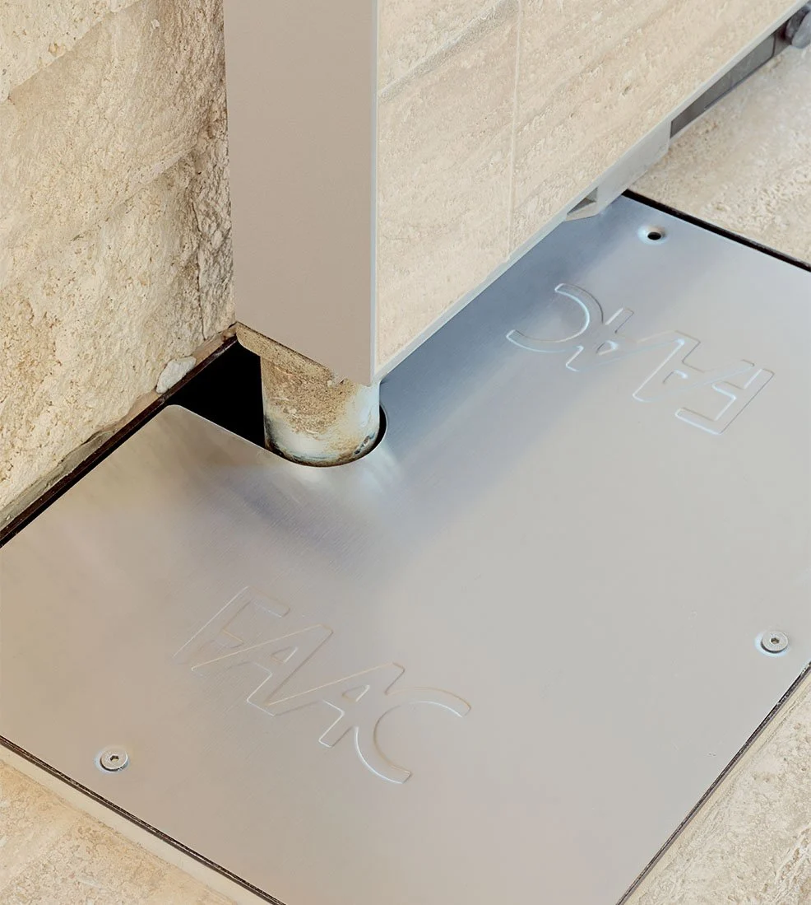
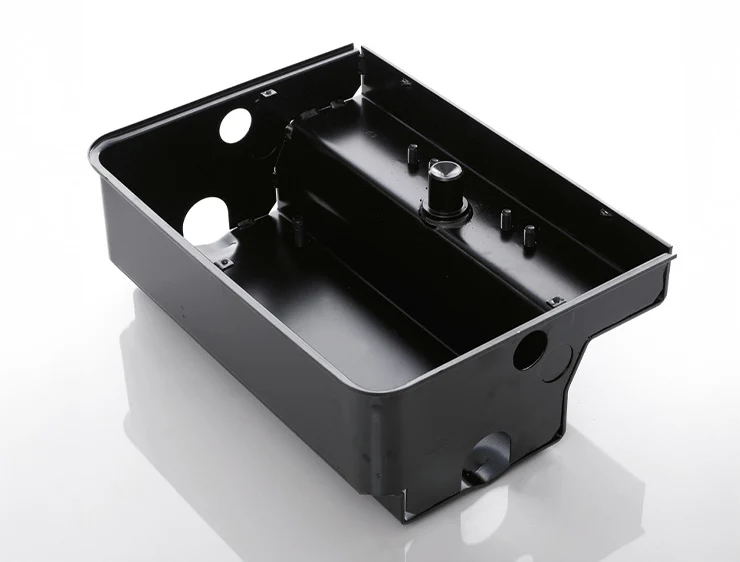
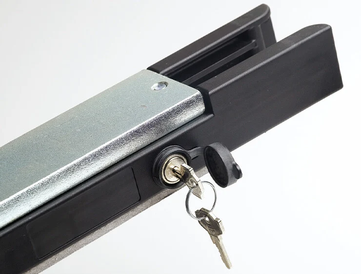

Motor electromecánico para hojas de hasta 3,5 mts y 500 kg a 110V.
Operador invisible
Desbloqueo manual con doble palanca accesible tanto desde el interior como desde el exterior de la propiedad (Patentado)
Posibilidad de acceder al operador sin retirar la hoja (770N 230V)
Dispositivo antiaplastamiento y encoder virtual con función de inversión en caso de obstáculo (770N 24V)


Diseñado para quienes desean automatizar su portón preservando la estética, FAAC 770N es enterrado, por lo tanto invisible y silencioso.
La instalación del sistema puede realizarse en dos fases: enterrando las cajas vacías al mismo tiempo que las canaletas eléctricas, y luego agregando los motores cuando el portón esté listo para ser automatizado.

El sistema FAAC 770N es autobloqueante. Esto garantiza el bloqueo del portón en cualquier posición y evita la instalación de una electrocerradura.
La seguridad antiaplastamiento está garantizada por el dispositivo electrónico de regulación del par del motor presente en la tarjeta de gestión (conforme a las normas europeas EN 12445 y EN 12453).
Desbloqueo con llave fácil de usar.
Información técnica